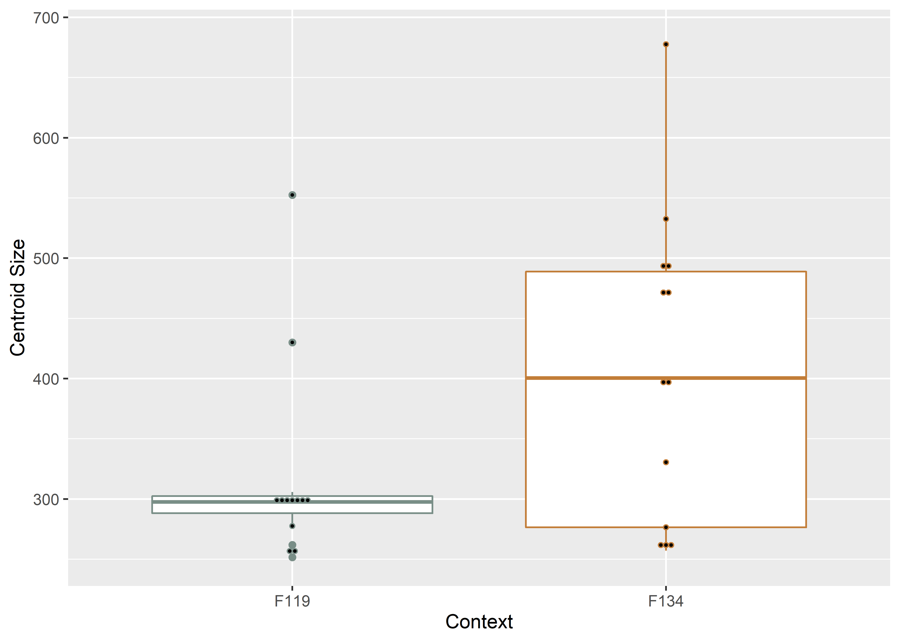
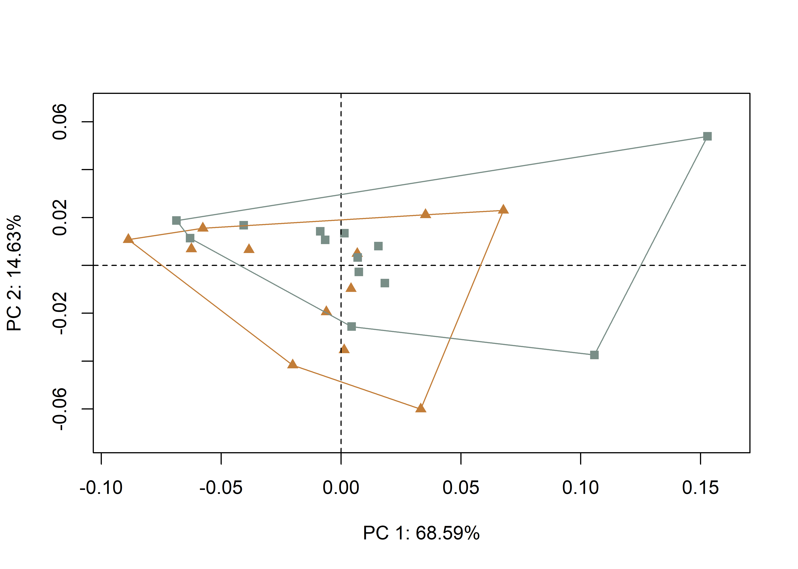

Chapter 5 Hypothesis 1b
This effort follows recent analyses of Gahagan biface shapes across the southern Caddo area and central Texas (Selden Jr., Dockall, and Shafer 2018; Selden Jr., Dockall, and Dubied 2020), where Gahgagan bifaces were found to differ in shape across the same geography as Caddo bottles (Selden Jr. 2018a, 2018b, 2019, 2021) and Perdiz arrow points (Selden and Dockall, in review). The analysis builds upon previous discussions and analyses conducted by Shafer (1973b, 1974, 2006). A succinct overview of the analytical procedures used for this analysis is provided in the manuscript, and the analytical code provided in this document can be used to reproduce the results exactly.
Hypothesis 1b: Temporal change in Caddo preference at George C. Davis
To assess the temporal change in preference between caches of Gahagan bifaces recovered from Mound C at the George C. Davis site, those from Feature 134 are contrasted with those from Feature 119 (Shafer 1973a; Story 1997). The stratigraphic position of Feature 119 indicates that the burials in that feature occurred subsequent to those associated with Feature 134 (Shafer 1973a; Story 1997).
knitr::include_graphics('images/h1b.jpg')
(#fig:h1b.analysis)Stratigraphic position of Features 119 and 134 at the George C. Davis site; adapted from Story (1997:Figure 13).
5.1 Load packages + data
# load libraries
library(here)
library(geomorph)
library(tidyverse)
library(wesanderson)
source('readmulti.csv.R')
# read .csv files
setwd("./dataH1b")
filelist <- list.files(pattern = ".csv")
coords <- readmulti.csv(filelist)
setwd("../")
# read qualitative data
qdata <- read.csv("qdataH1b.csv",header = TRUE, row.names = 1)
qdata <- qdata[match(dimnames(coords)[[3]], rownames(qdata)),]5.2 Generalized Procrustes Analysis
Landmark data were aligned to a global coordinate system (Kendall 1981, 1984; Slice 2001), achieved through generalized Procrustes superimposition (Rohlf and Slice 1990) performed in R 4.1.0 (R Core Development Team, 2021) using the geomorph library v. 4.0.0 (Adams et al. 2017; Adams and Otárola-Castillo 2013; Baken et al. 2021). Procrustes superimposition translates, scales, and rotates the coordinate data to allow for comparisons among objects (Gower 1975; Rohlf and Slice 1990). The geomorph package uses a partial Procrustes superimposition that projects the aligned specimens into tangent space subsequent to alignment in preparation for the use of multivariate methods that assume linear space (Rohlf 1999; Slice 2001).
Y.gpa <- gpagen(coords,
PrinAxes = TRUE,
print.progress = FALSE)
## plot gpa
#plot(Y.gpa)
## 3D gpa plot
#knitr::include_graphics('images/f119f134-gpa3d.png')
# geomorph data frame
gdf <- geomorph.data.frame(shape = Y.gpa$coords,
size = Y.gpa$Csize,
context = qdata$context)
# add centroid size to qdata
qdata$csz <- Y.gpa$Csize
# attributes for boxplot
csz <- qdata$csz
context <- qdata$context
# palette
pal <- wes_palette("Moonrise2")5.3 Boxplot
# boxplot - centroid size by context
csz.temp <- ggplot(qdata, aes(x = context, y = csz, color = context)) +
geom_boxplot() +
geom_dotplot(binaxis = 'y', stackdir = 'center', dotsize = 0.3) +
scale_color_manual(values = pal) +
theme(legend.position = "none") +
labs(x = 'Context', y = 'Centroid Size')
## render plot
csz.temp## Bin width defaults to 1/30 of the range of the data. Pick better value with `binwidth`.
5.4 Principal Components Analysis
Principal components analysis (Jolliffe 2002) was used to visualise shape variation among the bifaces. The shape changes described by each principal axis are commonly visualized using thin-plate spline warping of a reference 3D mesh (Klingenberg 2013; Sherratt et al. 2014).
# principal components analysis
pca <- gm.prcomp(Y.gpa$coords)
summary(pca)##
## Ordination type: Principal Component Analysis
## Centering by OLS mean
## Orthogonal projection of OLS residuals
## Number of observations: 25
## Number of vectors 24
##
## Importance of Components:
## Comp1 Comp2 Comp3 Comp4 Comp5 Comp6 Comp7 Comp8
## Eigenvalues 0.002903533 0.0006193474 0.0001569143 0.000132337 0.0001062366 7.172831e-05 5.942508e-05 4.515295e-05
## Proportion of Variance 0.685861626 0.1462998803 0.0370657049 0.031260147 0.0250948034 1.694339e-02 1.403717e-02 1.066586e-02
## Cumulative Proportion 0.685861626 0.8321615060 0.8692272109 0.900487358 0.9255821612 9.425255e-01 9.565627e-01 9.672286e-01
## Comp9 Comp10 Comp11 Comp12 Comp13 Comp14 Comp15
## Eigenvalues 3.398408e-05 0.0000240526 1.577665e-05 1.246308e-05 9.929067e-06 8.434244e-06 6.482429e-06
## Proportion of Variance 8.027589e-03 0.0056816128 3.726701e-03 2.943981e-03 2.345407e-03 1.992305e-03 1.531255e-03
## Cumulative Proportion 9.752562e-01 0.9809377755 9.846645e-01 9.876085e-01 9.899539e-01 9.919462e-01 9.934774e-01
## Comp16 Comp17 Comp18 Comp19 Comp20 Comp21 Comp22
## Eigenvalues 5.276073e-06 4.372143e-06 4.025540e-06 3.840515e-06 2.639373e-06 2.201008e-06 2.114826e-06
## Proportion of Variance 1.246294e-03 1.032771e-03 9.508977e-04 9.071919e-04 6.234628e-04 5.199138e-04 4.995562e-04
## Cumulative Proportion 9.947237e-01 9.957565e-01 9.967074e-01 9.976146e-01 9.982380e-01 9.987580e-01 9.992575e-01
## Comp23 Comp24
## Eigenvalues 1.836099e-06 1.307159e-06
## Proportion of Variance 4.337163e-04 3.087722e-04
## Cumulative Proportion 9.996912e-01 1.000000e+00# set plot parameters to plot by context
pch.gps.context <- c(15,17)[as.factor(context)]
col.gps.context <- pal[as.factor(context)]
col.hull.context <- c("#798E87","#C27D38")
## plot pca by context 2
pc.plot <- plot(pca, asp = 1,
pch = pch.gps.context,
col = col.gps.context)
shapeHulls(pc.plot,
groups = context,
group.cols = col.hull.context)
5.4.1 Plot PCA with mean shape + x/y maxima/minima
## plot PCA with mean shape (gray) and x/y maxima/minima (black)
#knitr::include_graphics('images/cacheind-pca-warpref.png')5.5 Procrustes ANOVA
A residual randomization permutation procedure (RRPP; n = 10,000 permutations) was used for all Procrustes ANOVAs (Adams and Collyer 2015; Michael L. Collyer and Adams 2018), which has higher statistical power and a greater ability to identify patterns in the data should they be present (Anderson and Ter Braak 2003). To assess whether shape changes with size (allometry), and differs by context (context), Procrustes ANOVAs (Goodall 1991) were also run that enlist effect-sizes (zscores) computed as standard deviates of the generated sampling distributions (M. L. Collyer, Sekora, and Adams 2015).
# MODEL: shape as a function of context
fit.shapecontext <- procD.lm(shape ~ context,
data = gdf,
print.progress = FALSE,
iter = 9999)
# ANOVA: do gahagan biface shapes differ by context?
anova(fit.shapecontext)##
## Analysis of Variance, using Residual Randomization
## Permutation procedure: Randomization of null model residuals
## Number of permutations: 10000
## Estimation method: Ordinary Least Squares
## Sums of Squares and Cross-products: Type I
## Effect sizes (Z) based on F distributions
##
## Df SS MS Rsq F Z Pr(>F)
## context 1 0.004678 0.0046783 0.04604 1.1102 0.53667 0.3061
## Residuals 23 0.096924 0.0042141 0.95396
## Total 24 0.101602
##
## Call: procD.lm(f1 = shape ~ context, iter = 9999, data = gdf, print.progress = FALSE)# MODEL: size as a function of context
fit.sizecontext <- procD.lm(size ~ context,
data = gdf,
print.progress = FALSE,
iter = 9999)
# ANOVA: do gahagan biface sizes differ by context?
anova(fit.sizecontext)##
## Analysis of Variance, using Residual Randomization
## Permutation procedure: Randomization of null model residuals
## Number of permutations: 10000
## Estimation method: Ordinary Least Squares
## Sums of Squares and Cross-products: Type I
## Effect sizes (Z) based on F distributions
##
## Df SS MS Rsq F Z Pr(>F)
## context 1 48317 48317 0.14787 3.9912 1.5181 0.0599 .
## Residuals 23 278431 12106 0.85213
## Total 24 326748
## ---
## Signif. codes: 0 '***' 0.001 '**' 0.01 '*' 0.05 '.' 0.1 ' ' 1
##
## Call: procD.lm(f1 = size ~ context, iter = 9999, data = gdf, print.progress = FALSE)